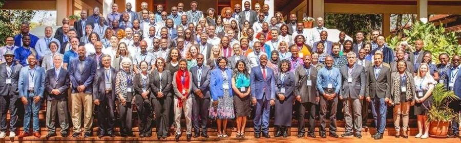

Materials Science and Engineering Assistant Professor Aeriel Leonard was invited as a delegate at the first U.S.-Africa Frontiers of Science, Engineering and Medicine Symposium hosted by the U.S. National Academies of Sciences, Engineering and Medicine and the African Academy of Sciences. Computer Science and Engineering Professor Tanya Berger-Wolf was on the organizing committee and co-led a plenary session on biodiversity at the event, held Oct. 12-14 in Nairobi, Kenya.